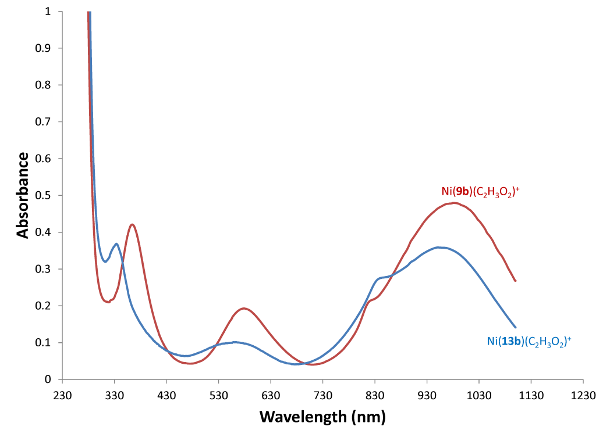
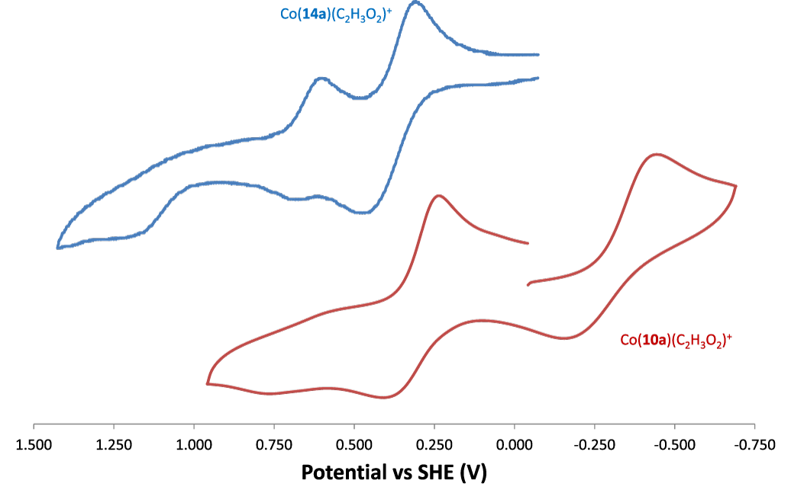

The SWOSU Journal of Undergraduate Research (SWOSU JUR), a journal developed and run by SWOSU students and faculty, is pleased to present its inaugural issue. The mission of the SWOSU JUR is to showcase the diverse research activities happening at our institution, and we hope to achieve this goal in the following ways: promote a collaborative atmosphere that encourages research and scholarly activities; foster mentor/mentee relationships between faculty and students; publicize original intellectual and creative contributions by students and faculty; and provide opportunities to engage in all aspects of research and scholarly activities.
Very rarely does an edition of a journal get made without copious amounts of dedication and support from a multitude of sources. The journal staff would like to acknowledge the hard work and persistence that each of the authors and their faculty mentors have put into their contributions.
We would also like to extend our gratitude to the individuals that have helped publish this work: the Office of Sponsored Programs and the students’ allocation at SWOSU for their financial support, student editor Heather Bailey for her meticulous copy editing endeavors, the other student editors, and all the blind reviewers for their time and effort in helping our students polish their work for publication. Finally, the journal would like to show appreciation for the efforts of members of the faculty who made this journal possible: Managing Editors—Dr. Andrea Holgado, Dr. David Hertzel, Dr. Denise Landrum-Geyer, and Dr. Becky Bruce; Production Editors—Dr. Joel Kendall and Nicholas Lindley; Review Coordinator, Dr. Muatasem Ubeidat; and Outreach and Promotion Coordinator, Dr. Stephen Burgess.
Editorial Staff
Managing Editors
STEM: Dr. Andrea Holgado
History, Social Sciences, and Behavioral Sciences: Dr. Becky Bruce and Dr. David Hertzel
Arts and Humanities: Dr. Denise Landrum-Geyer
Copy Editors
Faculty: Dr. Denise Landrum-Geyer
Student: Heather Bailey
Production Editors
Faculty: Dr. Joel Kendall
Staff: Nicholas Lindley
Review Coordinators
Faculty: Dr. Muatasem Ubeidat
Outreach and Promotion Coordinator
Dr. Stephen Burgess
Transition Metal Complexes of Dibenzyl Tetraazamacrocycles
by Ashlie N. Walker, Megan A. Ayala, Mackenzie C. Bergagnini, P. John D. Bui, Stephanie N. Chidester, Chad I. Doeden, Louise Esjornson, Brian R. Sweany
(Prof. Tim Hubin, Department of Chemistry)
Tetraazamacrocycles, cyclic molecules with four nitrogen atoms, have long been known to produce highly stable transition metal complexes. Cross-bridging such molecules with 2-carbon chains has been shown to enhance the stability of these complexes even further, providing enough stability to use the resulting compounds in applications as diverse and demanding as aqueous, green oxidation catalysis all the way to drug molecules injected into humans. Although the stability of these compounds is believed to result from the increased rigidity and topological complexity imparted by the cross-bridge, there is insufficient experimental data to exclude other causes. In this study, standard organic and inorganic synthetic methods were used to produce unbridged dibenzyl tetraazamacrocycle analogues of known cross-bridged tetraazamacrocycles and their transition metal complexes to allow direct comparison of molecules identical except for the cross-bridge. The syntheses of the known tetraazamacrocycles and the novel transition metal complexes were successful with high yields and purity. Initial chemical characterization of the complexes by UV-visible spectroscopy and cyclic voltammetry shows little difference in electronic properties from bridged versions. Direct comparison studies of the unbridged and bridged compounds’ stabilities remain to be carried out and will shed light on the importance of the cross-bridge to complex robustness.
Introduction
Ligands are organic molecules containing atoms, like nitrogen, which have lone pairs of electrons capable of interacting with metal ions to form complexes where the ligand and the metal ion combine to form a new compound with distinct and often useful new properties. Tetraazamacrocycles are common ligands containing four nitrogen atoms tied together in a ring by carbon chains. The stability of transition metal complexes can be characterized by their kinetic stability (how long it takes to decompose the complex under harsh conditions) and/or their thermodynamic stability (energy values which can be determined for any molecule; lower energy equals more stability). Inorganic chemists have learned that the kinetic stability of metal complexes can be increased by many orders of magnitude by increasing the topological complexity (number of links between the nitrogen atoms) and rigidity of the ligand. In general, complex kinetic stability decreases in the series bridged azamacrocycle ligand > azamacrocyclic ligand > linear ligand with more than one nitrogen > single nitrogen ligand.1
Cross-bridged tetraazamacrocycles having an additional 2-carbon bridge between non-adjacent nitrogen atoms of a tetraazamacrocycle, which are particularly rigid and lead to very kinetically stable metal complexes, have been extensively studied by Hubin, et. al.2 This stability confers on these transition metal complexes great promise in such applications as homogeneous catalysis, where complex stability has historically been a problem. However, specific studies where “control” metal complexes, identical in all ways except lacking the ligand cross-bridge, have not been prepared and characterized with respect to complex stability, as well as other properties. For cross-bridged complexes, there is a need to probe the thermodynamic stability at the same time as the kinetic stability, to make sure that the increase in the latter is not a byproduct of change in the former, but rather due to topological and rigidity factors alone.
Electronic properties (specifically of the metal d-electrons) of tetraazamacrocycle transition metal complexes are influenced by their geometric structure and the pattern of the nitrogen atom substituents.3 If these properties are very similar between bridged and unbridged complexes of the same metal ion, that indicates that the bridge has little effect on the d-electron configuration. The d-electron configuration would be most closely associated with thermodynamic stability, which would therefore be assumed to be approximately the same for the bridge/unbridged pair. However, if the kinetic stability of the bridged complex is much greater than its unbridged analogue, then these results would be consistent with the hypothesis that the topological complexity and additional rigidity of the cross-bridge is responsible for the additional kinetic stability of cross-bridged complexes, not any thermodynamic stabilization.
Figure 1. Unbridged vs. cross-bridged tetraazamacrocycles and complexes
We report here modified methods4 for synthesizing known dibenzyl cyclen and cyclam (common names based on the ring size) tetraazamacrocycle ligands 1,7-dibenzylcyclen (1) and 1,8-dibenzylcyclam (2) (numbers indicate the location on the ring of the benzyl groups) and their transition metal complexes. The cyclam ligand has been complexed to a number of metal ions previously,5 but the characterization of its complexes has been limited. The cyclen analogue has no published complexes. Therefore, we aimed to synthesized and characterize the complexes of these two analogous tetraazamacrocycle ligands for comparison. In particular, we wanted to contrast the properties of these unbridged complexes with the known cross-bridged complexes.
Figure 2. 1,7-dibenzylcyclen (1) and 1,8-dibenzylcyclam (2)
Materials and Methods
General
N,N’-bis(amino-propyl)ethyl-enediamine (98%) was purchased from Acros Organics. Glyoxal (40% wt in water), methyl iodide (99%), and sodium borohydride (98%) were purchased from Aldrich Chemical Co. Cyclen was purchased from Strem Chemical Co. All solvents were of reagent grade and were dried, when necessary, by accepted procedures.6 Cyclam was prepared according to a modified literature method from N,N’-bis(aminopropyl)ethylenediamine.7 Elemental analyses were performed by Quantitative Technologies Inc. Electrospray Mass spectra were collected on a Shimadzu LCMS-2020 instrument. NMR spectra were obtained on a Varian Bruker AVANCE II 300 MHz NMR Spectrometer instrument. IR spectra of the samples as KBr pellets were recorded on a Thermo-Nicolet 380 FTIR Spectrometer. Electronic spectra were recorded using a Beckman Coulter DU800 UV-Vis Spectrometer. Conductance measurements were obtained with an Oakton CON510 Bench Conductivity/TDS Meter on 0.001 M solutions at room temperature. Magnetic moments were obtained on finely ground solid samples at ambient temperatures using a Johnson Matthey MSB Auto magnetic susceptibility balance. Electrochemical experiments were performed on a BAS Epsilon EC-USB Electrochemical Analyzer. A button Pt electrode was used as the working electrode with a Pt-wire counter electrode and a Ag-wire pseudo-reference electrode. Scans were taken at 200 mV/s. Acetonitrile solutions of the complexes (1 mM) with tetrabutylammonium hexafluorophosphate (0.1 M) as a supporting electrolyte were used. The measured potentials were referenced to SHE using ferrocene (+0.400 V versus SHE) as an internal standard. All electrochemical measurements were carried out under N2.
tetracyclen (4)
26.3 g (0.153 mol) of cyclen (3) and 105 mL of acetonitrile were added to a 500 mL roundbottom flask, which was then flushed for 15 minutes with N2 gas. 22 mL (8.88 g or 0.153 mol) of 40% by mass glyoxal solution was added and the reaction stirred under N2 at 50–65 ℃ for 2 hours. The solvent was removed and the brown residue was extracted with 5 × 50 mL portions of chloroform. Following filtration, the chloroform solution was evaporated to give the product as an oil. The product was purified by column chromatography using neutral Brockman I alumina with 1% MeOH in CH2Cl2 as the eluent. Yield = 22.327 g (75%). Electrospray mass spec: m/z at 195 = LH+.
Figure 3. Synthetic scheme for 1,7-dibenzylcyclen (1)
dibenzyltetracyclen (5)
10.53 g (0.0543 mol) of 4 was dissolved in 300 mL dry acetonitrile and added to a 500 mL roundbottom flask. 97 mL (0.8145 mol, 15 eq) of benzyl bromide was added, the flask stoppered, and then stirred at room temperature for 4 days. [CAUTION: benzyl bromide is an extreme lachrymator; use only in a chemical fume hood.] The white solid product was filtered on a fine glass frit, washed with acetonitrile and then ethyl acetate to remove excess benzyl bromide. The solid was vacuum dried to give 25.7 g of pure product (88% yield). Electrospray mass spec: m/z = 455 (L − Br)+. Elemental analysis calc for C24H32N4Br2: C 53.73, H 5.97, N 10.45; found C 53.52, H 6.00, N 10.30.
1,7-dibenzylcyclen (1)
36.115 g (0.0673 mol) of 5 and 360 mL of 3 M aqueous NaOH were added to a 500 mL roundbottom flask. The flask was stirred and heated in an oil bath at 80 ℃ for 3 days under nitrogen. A yellow solution with an orange oil floating on top resulted, and was cooled and extracted with 5 portions of 80 mL of CH2Cl2. The organic layers were combined, dried over MgSO4, filtered, and evaporated to give an orange foamy solid product (20.656 g, 87% yield). Electrospray mass spectrum: m/z = 353 (LH+). Elemental analysis calculated for C22H32N4 · 3H2O: C 64.99, H 9.42, N 13.78; found C 65.61, H 8.61, N 13.45.
BMBcyclam (7)
12.0 g (0.060 mol) of cyclam (6) was added to a 2 L roundbottom flask and stirred with 600 mL of CH2Cl2 and 600mL of 30% NaOH. This solution was then refluxed under a N2 atmosphere for 36 hours. The biphasic solution was extracted four times with 100 mL CH2Cl2. The combined organic layer was dried over MgSO4 for one hour, then filtered, evaporated, and dried under vacuum to obtain 7. Yield = 12.25 g (91%). Electrospray mass spectrum: m/z = 225 (LH+). NMR (1H and 13C) gave peak regions of 2.17-3.10 ppm for macrocycle hydrogens, and peaks at 19.4, 48.4, and 68.0 ppm for unique carbons.
Figure 4. Synthetic scheme for 1,8-dibenzylcyclen (2)
DibenzylBMBcyclam (8)
12.0 g of 7 was dissolved in 250 mL of acetonitrile in a 500 mL roundbottom flask. 3 equivalents of benzyl bromide was added and stoppered. This solution was stirred for a week at room temperature. The white solid produced was collected on a glass frit, washed with 50 mL of ethyl acetate to ensure all benzyl bromide was removed, and then dried under vacuum. Yield = 27.3 g (90%) Electrospray mass spectrum: m/z = 203 m/z (L−2Br)2+, m/z = 407 (L−2Br)+, and m/z = 487 (L−Br)+. NMR gave peak regions for macrocycle hydrogens at 1.76–3.60 ppm, benzyl hydrogens 4.31–4.65 ppm. Unique carbons were seen at 19.4, 47.6, 51.3, 59.6, 62.9, 76.8 ppm.
1,8-dibenzylcyclam (2)
22.0 g of 8 was dissolved in 500 mL of 3 M NaOH in a 1 liter Erlenmeyer flask. This solution was stirred for 3 hours at room temperature. The solution was then extracted with five times 150 mL of CHCl3. All organic layers were collected and dried over MgSO4, then filtered. The solution was evaporated and dried under vacuum to obtain 2. Yield = 13.6 g (92%). Electrospray mass spec: m/z = 381 (LH). NMR (1H and 13C) analysis gave peak regions of, 1.85, and 2.51–2.74, 3.71 ppm for macrocycle hydrogens and 4.72 ppm for benzyl hydrogens. Six unique carbon peaks were found at 26.0, 47.7, 50.2, 52.0, 54.2, and 58.2 ppm.
Metal Complexation
All complexation reactions were performed in an inert atmosphere glovebox. All complexations used one equivalent of anhydrous metal acetate (M(C2H3O2)2) salts in anhydrous methanol (20 mL) reacted with one equivalent of macrocyclic ligand. Complexations of 1 used 0.705 g (0.0020 mol) of ligand 1; complexations of 2 used 0.425 g (0.0011 mol) of ligand 2. The following specific example is typical of all eight complexation reactions.
Figure 5. Metal complexation reactions
0.425 g (0.0011 mol) of 1,8-dibenzylcyclam and 0.195 g (0.0011 mol) of anhydrous cobalt(II) acetate were added to a 20 mL reaction vial and 15 mL of anhydrous methanol was added. The reaction was stirred at room temperature for 7 days. The reaction vial was removed from the glovebox and the workup was done in air. The reaction solution was filtered through celite in a Pasteur pipette into a 100 mL roundbottom flask to remove any trace solids. Separately, 5 equivalents (0.0055 mol, 0.897 g) of NH4PF6 was dissolved in a minimal amount of methanol (~5 mL). This solution was filtered through a chemwipe in a pipette and into the stirring metal complex solution. Precipitate of the pink complex as a PF6− salt formed immediately. The reaction flask was placed in a freezer (−10 ℃) for 1 hour to complete the precipitation of the product. The solid pink powder product was collected on a fine glass frit, washed with a minimal amount of cold methanol, then ether. The product was transferred to a 4-dram vial and dried overnight under vacuum. Yield = 0.506 g (70%).
[Note: one exception to the procedure above was required for the [Ni(Bn2Cyclen)(OAc)]PF6 complex. It did not precipitate from methanol. Therefore, it was evaporated to dryness and ~50 mL of water was added. The pale blue product was not water soluble and was filtered from the water solution.]
Results and Discussion
Complex Synthesis
Both ligands are known in the literature and our syntheses of them yielded pure compounds in good yield (57% yield for three steps for 1; 75% yield for three steps for 2). Complexation occurred as expected in methanol for both ligands with all four divalent metal ions (Co, Ni, Cu, and Zn) from their acetate salts. Macrocycle complexes with acetate counter anions are typically hygroscopic oils, so we did not try to isolate them. Instead we performed an anion metathesis reaction with hexafluorophosphate to give the [M(ligand)(acetate)]PF6 complexes, which precipitate out of methanol and are non-hygroscopic powders. Formulas, yields, electrospray mass spec peaks, and elemental analysis data for all eight complexes are given in Table 1 and Table 2 below. Both ligands are known in the literature and our syntheses of them yielded pure compounds in good yield (57% yield for three steps for 1; 75% yield for three steps for 2). Complexation occurred as expected in methanol for both ligands with all four divalent metal ions (Co, Ni, Cu, and Zn) from their acetate salts. Macrocycle complexes with acetate counter anions are typically hygroscopic oils, so we did not try to isolate them. Instead we performed an anion metathesis reaction with hexafluorophosphate to give the [M(ligand)(acetate)]PF6 complexes, which precipitate out of methanol and are non-hygroscopic powders. Formulas, yields, electrospray mass spec peaks, and elemental analysis data for all eight complexes are given in Table 1 and Table 2 below.
Table 1. Yields and selected peaks in the electrospray mass spectra of ligand 1 and 2 complexes
TODO: Insert Table 1
Table 2. Formulas and elemental analyses of ligand 1 and 2 complexes
TODO: Insert Table 2
All of the complexes were formed, based on the expected color changes and dissolution of the ligand and metal salt during the reactions. Additional evidence of complexation is shown by the multiple peaks in the electrospray mass spectrum for each complex containing both the metal and the ligand and sometimes other species as well (acetate, hexafluorophosphate, water, see Table 1). Yields were typically from 50%–75%, which are acceptable. These yields were likely lowered for several of the complexes by considerable solubility in the methanol solution they were precipitated from. Indeed, 10b never did precipitate from methanol. Instead it was obtained by removing the methanol and stirring the residue in water to produce the pale blue powder product. Finally, the low yield of 9c can be explained by the fact that two different colored solids precipitated from methanol, one red (9c) and another purple. Red 9c was separated from the purple solid due to its lower solubility in methanol, whereas the purple solid could be dissolved away due to its higher methanol solubility. The purple solid is likely a configurational isomer of 9c, due to its similar elemental analysis. Only 9c, the higher-yielding product, was characterized for this study.
The purity of the complexes was examined by elemental analysis. “Pure” compounds generally have experimental percent C, H, and N values with 0.4% of their calculated values. Often, compounds absorb water from the air, which is called hygroscopy. Six of the complexes are pure by this standard, although five of them appear hygroscopic, as additional amounts of water must be added to their formula to meet this standard. Two complexes, 10b and 10c, could not be made to fit a formula matching their experimental values sufficiently. Since both complexes are homogenous powders of typical colors for their metal ions and with acceptable mass spectrum peaks, it is anticipated that their true formulas will be discovered if and when an X-ray crystal structure is obtained in the future. All eight complexes gave crystals likely to yield structures when slow evaporation and ether-diffusion crystallization methods were applied. These crystals will be sent to a collaborator with the appropriate X-ray diffractometer for crystal structures to be obtained.
Comparison to Cross-Bridged Complexes
Recall that the motivation of this work was to make complexes differing from the known cross-bridged analogues by only the lack of the cross-bridge itself. Ligands 11 and 12 in Figure 6 have yielded complexes 13a–d and 14a–d in previous work in the Hubin labs. In this study, UV-Vis, magnetic moment, and cyclic voltammetry experiments will serve as points of comparison between the cross-bridged and unbridged complexes. These experiments examine the complexes’ electronic properties, which if similar between bridged and unbridged analogues, would indicate that their d-electron configurations are also similar. Small differences in d-electron configurations should result in only small differences in thermodynamic stabilities between the bridged and unbridged analogues. If future kinetic stability experiments show large (many orders of magnitude) differences in kinetic stability, the topological and rigidity constraints associated with the cross-bridge, rather than any inherent thermodynamic differences, are the likely (and hypothesized) cause of that kinetic stability.
Figure 6. Cross-bridged ligands and complexes for comparison
UV-visible spectroscopic values for the 12 UV-visible active complexes 9a-c, 10a-c, 13a-c, and 14a-c are given in Table 3 below. In all cases, “a” complexes are cobalt, “b” complexes are nickel, and “c” complexes are copper. Zinc “d” complexes are not UV-visible active due to their d10 electron configurations, and are therefore not included. “λmax” indicates peak locations (wavelength or color of absorbed light) and “ε” (extinction coefficient) indicates intensity of light absorption. All spectra were recorded in acetonitrile at similar concentrations.
Table 3. Electronic spectra comparison
TODO: Insert table 3
In general, it is striking how similar the absorbance wavelengths and intensities are when comparing complexes that differ only due to the presence or absence of the cross-bridge. In most cases, wavelengths are within 10–30 nm and extinction coefficients are within 10–50 M−1 cm−1 of each other. Figure 7 illustrates what a typical UV-visible spectrum looks like and also shows, as an example, how similar spectra for Ni(13b) and Ni(9b) are. There are four absorbances at nearly the same wavelength and with nearly the same intensity for both complexes.

Figure 7. UV-visible spectra of Ni(13) and Ni(9) in acetonitrile at 0.01 M
Two significantly different pairs are found in the copper complexes. In these cases, the cross-bridge is not the only difference in the structure. In cross-bridged Cu(13c) and Cu(14c), there is an additional acetate ligand (according to elemental analysis), while in the unbridged Cu(9c) and Cu(10c), the elemental analysis indicates there is no acetate ligand. In solution, the assumption is that the copper ions in Cu(9c) and Cu(10c) will become 5-coordinate by binding an acetonitrile solvent molecule, as indicated in the formulas in the Table 3. The identity of this fifth ligands, acetate vs. acetonitrile, clearly leads to large differences in the d-d absorption band. In the acetate-binding complexes, this band is between 708–728 nm. However, the acetonitrile-binding complexes have the absorption between 528–607 nm. Acetate is negatively charged and binds copper through an oxygen donor. Acetonitrile is neutral and binds copper through a nitrogen donor. These differences would be expected to be evident in the UV-visible spectrum, and indeed are, making these complexes less useful for determining the effect of the bridge only.
Another difference is seen in the Co(13a) vs Co(9a) pair. While the wavelengths are similar, the extinction coefficients are quite different. The Co(13a) complex was determined to have oxidized upon workup in air to the Co3+ cation, while the same workup of Co(9a) did not oxidize its Co2+ ion. Comparison with other cobalt complexes2e,3a of similar azamacrocycle ligands, the wavelengths and extinction coefficients are consistent with these observations. Again, this makes direct comparison of the effect of the bridge only impossible, since other factors have changed. The difference in ease of oxidation is likely present due to the distortion of the preferred octahedral geometry by the short cross-bridge. It forces the macrocyclic ligand to be folded tightly, and likely reduces the size of the cavity for metal binding. Oxidation to Co3+ results in a smaller metal ion than Co2+, and is therefore apparently favored by the bridged ligand in Co(13a) over the more flexible unbridged ligand in the Co(9a) analogue. Interestingly, the Co(14a) and Co(10a) pair both remain in the Co2+ oxidation state. These ligands are both 14-membered rings, two carbons larger than the 12-membered 13a and 9a ligands. The larger rings appear to prefer larger Co2+ under the workup conditions.
Exploring the oxidation/reduction chemistry of these complexes, as discussed just above, can be done more directly through cyclic voltammetry experiments. In these experiments, the complexes in acetonitrile solution are subjected to a sweeping change in electrochemical potential, which can result in oxidation and reduction of the original metal ion. E1/2 values (electrochemical potentials were oxidation/reduction occurs) and Ea−Ec values (reflecting how reversible the oxidation/reduction pair is) for these complexes are given in Table 4. E1/2 values indicate coupled oxidation/reduction pairs that are assigned to the complex which appears to undergo little change (such as gain/loss of ligands) other than the gain/loss of electrons. In these cases a small Ea−Ec value indicates essentially no structural rearrangement upon oxidation/reduction, with 59 mV being the theoretical smallest value. Larger Ea−Ec values indicate some structural changes that shift the partner event farther away than the theoretical value. Ered or Eox are used when single oxidation or reduction processes are observed, but with no identifiable partner.
TODO: Insert table 4
Although certain patterns of the numbers and types of redox processes for each metal type are observed, many differences are seen between bridged and unbridged analogues. No bridged/unbridged pair gives nearly as similar behavior as in the UV-visible spectra discussed above. Figure 8 illustrates what a typical cyclic voltammogram looks like and also shows, as an example, how different voltammograms for Co(14a) and Co(10a) are. Co(14a) has only oxidations, with two reversible processes around +0.500 V, and an additional irreversible process near +1.200 V. Co(10a), while giving the same number of peaks, has one quasi-reversible reduction in the negative region (near -0.300 V) and only one reversible oxidation. Although the curves look similar in shape, the potential shifts are large and the types of processes each complex undergoes are significantly different.

Figure 8. Cyclic Voltammograms of Co(14) and Co(10) in acetonitrile at 0.001 M
While it is possible to discuss each bridged/unbridged pair in turn, we will not do so because such a discussion would be long, tedious, and difficult to follow since there are rather large changes in many cases, which don’t necessarily correlate between different bridged/unbridged pairs. Instead, we will speculate on why the electrochemical behavior is so different when the bridge is removed, while the UV-visible spectra change so little. A primary reason is likely the static nature of the UV-visible spectrum versus the dynamic reactivity inherent to cyclic voltammetry. The UV-visible spectrum is obtained on a complex without causing it to change in any way, thus you get information on the unreacted complex as it exists in a single structure in solution. According to the highly congruent UV-visible data, our initial bridged and unbridged complexes are structurally very similar to one another, with the presence or absence of the bridge making little difference except in the preference for Co2+/Co3+ in the Co(13a)/Co(9a) case and the preference for acetate anion binding the bridged/unbridged copper complexes discussed above.
However, the cyclic voltammetry experiment is a dynamic one, where complexes gain and lose d-electrons in response to the electrical potential they are subjected to. Once oxidation or reduction takes place, complexes may structurally rearrange in response to the new d-electron configuration, or even gain or lose ligands due to the preference of the new metal ion oxidation state. Perhaps it should not be surprising that the presence/absence of the 2-carbon cross-bridge leads to quite different structural rearrangements and/or ligand gains/losses, as demonstrated by the significant differences in electrochemical behavior between complexes differing only by the bridge. Additional studies will continue to probe these differences. Particularly, kinetic stability experiments are needed to determine the effects of the bridge. From the data presented, it is clear that the kinetic experiments will need to be carried out under conditions where the electrochemical potential is static, so the complexes are electronically as similar as possible, as in the UV-visible experiments above.
Acknowledgements
We thank the Chemistry Department of Southwestern Oklahoma State University for its support of this work, which was carried in the Fall 2013 Inorganic Chemistry Lab course CHEM 3211. TJH acknowledges the Oklahoma Center for the Advancement of Science and Technology for support through Grant Number HR13-157-1. Acknowledgement is made to the Donors of the American Chemical Society Petroleum Research Fund for partial support of this research.
Generating Caenorhabditis elegans UNC-33 antigens to be used for the Synthesis of Polyclonal Antibodies
by Matt Abbott, Jacob Fuller, Mason Howe, Michael Caniglia
(Prof. Andrea Holgado, Department of Biological Sciences)
UNC-33 and its human homolog, CRMP2 (Collapsin Response Mediator Protein-2), have been demonstrated to be involved in neurodevelopment as well as neurodegenerative disorders, primarily Alzheimer’s Disease. However, the physiology and interactions of these associations are vague. In order to further understand UNC-33/CRMP2, our group decided to use molecular biology and work toward the production of polyclonal antibodies specific to C. elegans UNC-33. To do this, we utilized the GST tag Gene Fusion System and produced two antigens—UNC-33 amino acid 48 to 212 and UNC-33 amino acid 48 to 131 (UNC-3348–212 and UNC-3348–131). During this process, parameters were developed for the efficient expression and purification of these polypeptides. Once an effective protocol was established, GST fused UNC-3348–212 and UNC-3348–131 were expressed, purified, and tested for purity multiple times. Overall, these procedures resulted in the production of 3.72 mg and 2.10 mg of GST fused to UNC-3348–212 and GST fused to UNC-3348–131, respectively. Currently, these purified polypeptides are being injected into laboratory animals for the generation of polyclonal antibodies for UNC-33 research.
Introduction
UNC-33/CRMP is a family of cytosolic proteins conserved from worms to humans. In the nematode Caenorhabditis elegans (C. elegans), the unc-33 gene encodes for three splicing isoforms, UNC-33L (long), UNC-33M (medium), and UNC-33S (short)(1,3–5). Studies of these protein isoforms demonstrate that UNC-33 proteins play a vital role in neuronal development and elongation of axons. Molecular analyses of these functions showed that UNC-33 proteins modulate the organization of actin filaments and microtubules within the axonal growth cone (1,2). Conversely, CRMP2, the vertebrate homolog of UNC-33, is heavily involved in promoting axonal specifications and differentiation (3,6-11). Within its normal bounds, CRMP2 binds tubulin to stabilize microtubules and facilitates protein trafficking (7,12-13). However, analyses of autopsies of patients suffering Alzheimer’s Disease (AD) showed that CRMP2 is heavily represented in toxic intracellular protein aggregates (7,12-13). For instance, examinations of the cortex, hippocampus, and isocortex identified that hyperphosphorylated CRMP2 accumulates at neurofibrillary tangles (NFTs) and β-amyloid (Aβ) peptide-rich plaques of AD patients (9,12,15–16). Furthermore, studies using a mouse animal model for AD suggested that rescue of CRMP2-dependent mechanisms play a role in the prevention of synapse loss and neurodegeneration (12). Consequently, Hensley and others postulated that CRMP2 could be an important target molecule for the development of experimental neurodegenerative disease therapeutics (9,17-20). Since then, studies from various groups demonstrated that lanthionine ketimine ethyl ester (LKE) binds to CRMP2 and rescues neuronal circuitry defects associated with mutations of the unc-33 gene (22, 23, 24).
Thus, to further investigate UNC-33 isoforms and ascertain the molecular bases of LKE action, we began producing two UNC-33 antigens for the production of polyclonal antibodies. To the present time, Kaibuchi and colleagues reported utilizing polyclonal antibodies raised against UNC-33-glutathione s-transferase (GST) fusion protein. This study also established the existence of three splicing forms of UNC-33—UNC-33L, UNC-33M, and UNC-33S, based on three alternative start codons and a common stop codon (1).
Herein, we present strategies followed for the production of two truncated UNC-33 fusion proteins and their purification. Truncated UNC-33 fusion proteins were made using two plasmids, the first plasmid coding for UNC-33 amino acids 48–212 was produced envisioning the production of an antibody that could detect isoforms UNC-33L and UNC-33M. The second plasmid coding for UNC-33 amino acids 48–131 was to be used for the generation of antibodies detecting of UNC-33L alone (1). Several parameters were investigated during the process of manufacturing these antigens, including the length of isopropyl-beta-D-thiogalactopyranoside (IPTG) induction time, troubleshooting the GST fusion affinity purification, filtration and dialysis of the GST fused UNC-33 proteins, and subsequent preparation for polyclonal antibody production. The proper concentration of glutathione sepharose beads and glutathione solution to be utilized was also established. In preparing for polyclonal antibody production, the protein of interest was concentrated and the elution product dialyzed vs. saline solution. This research project resulted in the production of 3.72 and 2.10 total mg of GST fused UNC-3348–212 and UNC-3348–131, respectively.
Materials and Methods
GST fusion expression plasmids and bacterial transformation
Plasmids ah139 (coding for GST fused UNC-3348–212) and ah142 (coding for GST fused UNC-3348–131) were kindly produced by LaKesha Seals using conventional molecular biology techniques, restriction enzymes Sal I and Bam HI, UNC-33 cDNA coding for amino acid 48-212 and 48-131, and pGEX 4T1 plasmid (GE Healthcare Life Sciences). Plasmids ah139 and ah142 were transformed into BL21-Gold (de3) pLys 5 competent cells (Stratagene) using the manufacturer recommendations.
UNC-33 Protein Induction Times
Overnight liquid cultures of transformed BL21-Gold (de3) pLys 5 cells were diluted 1/50 using 2xyT broth containing 100 μg/ mL ampicillin, and incubated in a shaker at 250 rpm, 37 ℃ for 1–4 hours. During that span of four hours, the cultures were checked every hour until they reached an Optical Density600 (OD600) of 0.6–0.8. Once desired OD600 was reached, IPTG at 0.5 mM of the final concentration was added to each culture to induce protein expression. Cultures were allowed to continue growing in a shaker at 250 rpm, 37 ℃ until overnight. Sample culture aliquots were taken before induction with IPTG, every two hours from 0–8 hours after induction, and overnight. Cultured cells harvested from each sample were centrifuged at 15,700 g for 1 minute and their pellets were prepared for SDS-PAGE analysis using 1X XT sample buffer (BioRad) and 1 X reducing agent (BioRad). Last, samples were heated at 100 ℃ for 5 minutes, and run for 1 hour at 150 V using precast Criterion gels (4–12% XT MES)(BioRad) and manufacturer recommendations.
Purification of GST Fusion Proteins
Cultures grown and induced according to the optimal empirical time were centrifuged at 5000 g at 4 ℃ for 10 minutes. The supernatant was decanted and the cells were stored at −80 ℃.
Next, cells were resuspended in 1X PBS solution containing 1X EDTA and 1X protease inhibitor (ThemoScientific). The resuspended pellets were transferred into 50 mL conical tubes and sonicated for 3, 30-second intervals with 30 seconds of incubation on ice in between. Triton x-100 in PBS was added to a final concentration of 1% and mixture was then incubated on a rotary shaker for 20 minutes at 4 ℃. Immediately following the incubation period, the lysate was centrifuged for 20 minutes at 3,220 x g, 4 ℃. Tubes containing 2 mL of glutathione sepharose beads per 500 mL of original bacterial culture were washed with 1X PBS and centrifuged for 1 minute at 3,220 g, 4 ℃. This wash process was repeated a total of three times. Once the centrifugation of the lysate was completed, the supernatant was divided evenly between the two tubes containing the beads and incubated on a rotary shaker overnight at 4 ℃. A 50 μL aliquot was taken of the supernatant before mixing with the beads (crude extract), and prepared for SDS-PAGE analysis following the procedure mentioned previously.
Cell lysate was incubated overnight with the GST purification resin to allow desired proteins to bind to sepharose beads. Samples were centrifuged for 30 seconds at 3,220 x g, 4 ℃, and before the supernatant was decanted and discarded, a 50 μL aliquot (unbound) was taken for SDS-PAGE analysis. Bead pellets containing purified protein were washed 3 times with 10 mL of PBS each time. Last, GST fused UNC-33 proteins were eluted from beads using freshly made 2 mL of 15 mM glutathione solution and incubating on rotary shaker overnight at 4 ℃. After elution, the samples were centrifuged for 30 seconds at 3,220 x g, 4 ℃, and the supernatant was transferred to a clean tube for storage. Beads were washed and reconstituted for future purifications. A sample aliquot of the eluted (supernatant) and non-eluted (beads) was taken SDS-PAGE analysis.
SDS-PAGE analysis
Samples prepared for SDS-PAGE analysis were run for 1 hour at 150 V using precast Criterion 4–12% XT MES gradient gels (BioRad) and manufacturer recommendations. Proteins on gel were stained with Coomassie brilliant blue R-250 (BioRad) for 1 hour and destained overnight. Stained gels were imaged using the ChemiDoc imaging system (BioRad).
Concentration via Amicon® Centrifugal Filter Device
Eluted purified GST::UNC-3348–212 and GST::UNC-3348–131 were concentrated using the Amicon® Ultra-15 10K Centrifugal Filter Devices (Millipore) and manufacturer recommendations. In brief, using Amicon®’s Typical Spin Time to Filtrate Volume Profile, the samples were centrifuged at 3220 x g and 1-minute intervals, checking after each centrifugation until the desired volume remained (27).
Protein Dialysis
Affinity purified antigens were dialyzed using a Slide-A-Lyzer® Dialysis Cassettes (10K MWCO) (ThermoScientific). Solution containing proteins of interest were injected into the dialysis cassette following the provided protocol (20). Dialysis cassettes were covered with 1X PBS and incubated by stirring overnight at 4℃. The dialyzed protein solution was removed by following the provided protocol as well (26). The purified protein was stored at −20℃.
Determination of Protein Concentration
Protein concentration was determined by quantifying the density of Coomassie brilliant blue R-250 stain in affinity purified protein samples and BSA (Bovine Serum Albumin) standards ranging from 80–1000 ng. Standards and other protein samples run on the same gel were imaged using image lab software (Bio-Rad). Volume tools menu of the image lab software (Bio-Rad) was utilized to produce a standard curve while concentration of unknowns was automatically determined from the line of best fit.
Results
GST::UNC-33 Induction Times
As demonstrated previously, the UNC-33 protein family consists of three different splicing forms UNC-33L, UNC-33M, UNC-33S (1). In order to pursue an understanding of the functional roles and expression patters of these three different splicing forms, we began the process of producing antigens GST::UNC-3348–212 for the production of antibodies detecting UNC-33L and UNC-33M, and GST::UNC-3348–131 for the detection of UNC-33L only. To do so, determining the optimum induction time for the expression of these proteins was the first of many steps leading to the synthesis of UNC-33 antigens. First, plasmids ah139 and ah142 were introduced into BL21-Gold (de3) pLys 5 cells, and the optimal time of induction leading to the ideal amount of GST::UNC-33 was determined empirically. Samples collected of various time periods after IPTG-mediated induction were analyzed using SDS-PAGE. Results shown in figure 1 revealed that GST::UNC-3348–212 and GST::UNC-3348–131 are being expressed at quantifiable amounts and poses a predicted size of 50 kDa and 37 kDa, which match calculations derived from the amino acid composition. Moreover, analysis of induction times for both GST::UNC-3348–212 and GST::UNC-3348–131 showed that the intensities of bands observed after 4–6 hours of induction are about the highest. At eight hours of induction, the bands either disappeared or lessened in signaling, suggesting a lower concentration of the proteins of interest.
(See figure 1)
Samples of BL21-Gold (de3) pLys 5 cultures expressing proteins of interest were analyzed via SDS-PAGE. Images obtained after Coomassie brilliant blue R-250 staining demonstrated that induction produced the highest amount of protein at times 4–6 hours and these proteins match the expected sizes of 50 and 37 kDa, respectively.
Affinity Purification of GST::UNC-33 antigens
Purifying GST::UNC-3348–212 and GST::UNC-3348–131 was vital in the production of polyclonal antibodies for splicing isoforms. Once we determined the optimum expression protocol, we continued with the adaptation of a affinity purification procedure that best fit that of GST::UNC-33. Utilizing the GST tag, affinity purification was achieved using the glutathione sepharose beads and glutathione solution. Beads containing glutathione bind to GST::UNC-3348–212 and GST::UNC-3348–131 with high affinity. Glutathione solution, on the other hand, elute affinity purified GST::UNC-3348–212 and GST::UNC-3348–131 by competing for binding and displacing GST fusion proteins from beads. As shown in figure 2, we successfully purified both UNC-33 antigens from crude cell extracts and eluted most of the GST::UNC-3348–212 and GST::UNC-3348–131 from beads.
(see figure 2)
Analysis of various samples of the affinity protein purification process indicates that GST::UNC-33 is purified from crude cell extracts and eluted from beads using a glutathione solution. Samples examined were crude cell extract (crude), unbound fraction (unbound), eluted and two tubes containing beads (non-eluted).
Concentrating UNC-33 antigens
Since results from 4 batches of protein affinity purification for GST::UNC-3348–212 and GST::UNC-3348–131 produced diluted samples of 0.202 mg/mL and 0.255 mg/mL, respectively. Fusion proteins were concentrated to an approximate target of 1.0 mg/ mL. Concentration of affinity purified proteins was accomplished using the Amicon® Ultra-15 10K Centrifugal Filtration Device and centrifugal forces. Results from this procedure produced a volume reduction of 12mL to 2.5 mL in the case of GST::UNC-3348–212 and 12 mL to 3 mL for GST::UNC-3348–131 mL after eight minutes centrifugation at 3220 g.
Dialysis and Determination of Protein Concentration.
After purification and concentration of proteins of interest, dialysis was necessary to remove glutathione from the elution sample. Dialysis against 1X PBS was performed using the Thermo Scientific Slide-A-Lyzer® Dialysis Cassettes, which permit the diffusion of substances smaller than 10 kDa. Once dialysis was complete, total protein content and concentration were determined by densitometry of SDS-PAGE gels. Intensity of Coomassie brilliant blue R-250 stained bands was quantified and GST::UNC-3348–212 and GST::UNC-3348–131 were compared to BSA Standards (Figure 3 and Figure 4). Results from this measurement led to the calculated concentrations equaling 1.24 mg/mL and 0.84 mg/mL for GST::UNC-3348–212 and GST::UNC-3348–131, respectively.
(see figures 3 and 4)
Discussion
Kaibuchi and colleagues were the first group studying UNC-33 in C. elegans and producing antiserum samples raised against amino acids 1-121 of UNC-33L (antibody anti-UNC-33L) and full-length UNC-33S (antibody anti all UNC-33 isoforms) (1). Using these antibodies, the group characterized the expression pattern of endogenous UNC-33 isoforms in C. elegans as well as the nature of the mutation in unc-33 mutant alleles. This investigation exhausted all the anti-serum containing UNC-33 polyclonal antibodies. Therefore, continuation of research centered on UNC-33 isoforms required the redevelopment of molecular tools that in this case will recognize one, two, or potentially all three isoforms. To fill this gap and further examine UNC-33 isoform expression pattern throughout development, in situ localization, and protein-protein interactions, we presented herein initial steps towards the production of antibodies specific for C. elegans UNC-33 isoforms. Even though a conventional system for the production of GST fusion proteins was employed, the steps leading to manufacturing the antibodies for UNC-33 required adapting an affinity purification protocol for the successful production of GST::UNC-33 proteins. Troubleshooting this procedure has required tedious attention as the basis for the creation of GST::UNC-33 was performed for the first time in our laboratory and preceding published information on these terms is not fully disclosed. First, determination of proper induction time was crucial, since induction times that are too long or not long enough can detrimentally affect the efficiency of the purification and amount of protein produced. Upon adding IPTG to the transformed cells, optimal production of the protein of interest took about 4–6 hours (Figure 1). This result is in agreement with previous work showing that the 4 to 6 hours after the addition of IPTG is sufficient for the displacement of the LacI repressor and induction of the Lac promoter (25). Thus, production of the two variants of GST::UNC-33 was maintained at the six hour time induction period.
In regard to the affinity purification of GST::UNC-33, the protocol adapted led to qualitatively and quantitatively sound results, but not without the need for improvement. Based on Figure 2, both GST::UNC-3348–212 and GST::UNC-3348–131 were present in the unbound and non-eluted samples. The unbound sample corresponds to the post-binding supernatant that contains proteins, which failed to bind to glutathione sepharose beads. The non-eluted sample comprises the glutathione sepharose beads after treatment with soluble glutathione. To decrease the percentage of unbound and noneluted proteins, we increased the amount of beads used for the purification and extended the time of elution. These changes led to an increased yield of the protein of interest. However, additional degradation products were observed. The appearance of these degradation products were resistant to protease inhibitors and EDTA (Figure 3).
After several batches of affinity purification procedures, diluted samples of GST::UNC-3348–212 and GST::UNC-3348–131 were concentrated with the Amicon® Ultra-15 Centrifugal Filter Device, which was reported to be effective in retaining proteins larger than 10 kDa. The protocol indicated by Amicon® led to the prediction that centrifugation at 4,000 g for approximately seven minutes should filtrate a 10 mL solution (27). Empirical results obtained by our group show that eight minutes were sufficient for filtrating between 9.0 and 10.0 mL of solvent.
The tripeptide Glutathione used during elution can result in undesired effect when injected together with the antigen. To remove and exchange the glutathione with PBS, we dialyzed the concentrated protein sample with Slide-A-Lyzer® Dialysis (26). This technique proved to be effective in exchanging the solvents and further removing contaminants from the protein samples.
Together, this research project resulted in the generation of 3.72 and 2.10 mg of GST::UNC-3348–212 and GST::UNC-3348–131 at concentrations of 1.24 mg/mL and 0.84 mg/mL respectively. Although the ultimate step in this investigation is antibody manufacturing, its success is critically dependent on the production of quality GST::UNC033 antigens. Moreover, the protein products produced during this research project have the potential to transform our current understanding of UNC-33/CRMP2 in health and disease.
Acknowledgements
Our thanks go to LaKesha Seals for constructing ah 139 and ah142 plasmids, and Tim Stein for helping with laboratory procedures. Funding for this research was provided by the Department of Biological Sciences, Southwestern Oklahoma State University and the National Science Foundation.
A Peculiar Institution Indeed: The Humanity of Indian Slave Owners
by Brennan King
(Prof. David Hertzel, Department of Social Sciences)
This project was undertaken to better understand the rift between the understandings of how slaves were treated in Indian Territory versus how they were treated in the Deep South. In order to complete this project research was completed at the Oklahoma Historical Society, along with primary source resources from archival materials from the now defunct Works Progress Administration. The resulting conclusion of this project is that slaves owned by Native Americans in Indian Territory were generally treated with much more humanity than were slaves in the Deep South. The main implication realized was that it is important to have a written record of slaves’ interpretations of their lives in bondage.
When setting out to interpret the history of the institution of slavery in Indian Territory, this author discovered, through archival analysis, that slavery itself was a much different institution among many of the Indian tribes in Indian Territory. While Native American slave-owners certainly treated their slaves harshly at times, these instances were in much fewer number than the recorded atrocities white slave-owners committed in the Southern United States. This does not mean that many slaves did not indeed face the wrath of their Indian owners, it simply means that the severity of the altercations paled in comparison to slaves living with whites in the American South, along with the numbers presented through analyzing archival evidence.
Indian slave-owners treated their slaves better that non-Indian slave-owners. Robert Vinson Lackey, of the United States Federal Writers’ Project (FWP), interviewed Mary Grayson, a Creek freedwoman from Tulsa, during the summer of 1937. Mary’s interview, along with countless others, painted a much different picture of slavery itself. Indians viewed their slaves as more than property. Mary stated:
We slaves didn’t have a hard time at all before the War. I have had people who were slaves of white folks back in the old states tell me that they had to work awfully hard and their masters were cruel to them sometimes, but all the Negroes I knew who belonged to Creeks always had plenty of clothes and lots to eat and we all lived in good log cabins we built. We worked the farm and tended to the horses and cattle and hogs, and some of the older women worked around the owner’s house, but each Negro family looked after a part of the fields and worked the crops like they belonged to us.1
Mary Grayson was just one of thousands of former slaves who field workers interviewed during the mid-1930s through the early 1940s. Before the Works Progress Administration (WPA) had made efforts to get Americans back to work, no one had ever asked former slaves for their perspective on being considered property prior to emancipation in 1865.
A wealthy Creek slave trader purchased Mary’s mother from a white Alabama man, and even after attempting to escape her new Indian master, the Creek slaver saw to it that Mary’s mother was treated well on his plantation. Mary’s new Creek master would not allow any punishment for the attempted escape. Instead, the Creek slave-trader gave Mary’s mother to one of the Creek man’s sons as his bride. Upon realization that Mary’s mother was unable to produce offspring at that time, her master then sold her to another Creek gentleman by the name of Mose Perryman. Perryman owned both Mary and her mother, and neither went on record to state that their former master treated them harshly. Two differing slave-owners, both prominent Creeks, owned the Graysons, and both Creek men were willing to show mercy to their slaves.2
By 1935, two years after President Franklin Delano Roosevelt instituted the New Deal, government officials proposed programs to help stave off hordes of unemployed Americans, and put Americans back to work. Harry Hopkins, the newly appointed head of the Federal Emergency Relief Administration (FERA), saw the need for a relief program that pertained only to those of a white-collar background. Hopkins ordered a survey to be conducted in thousands of American homes to find out which job skills his new program could utilize. What Hopkins discovered was that there were thousands of out-of-work writers, along with artists, in need of work.3 Hopkins appointed Jacob Baker as his “right-hand man” and the go-between for Hopkins and the workers he represented.4 Thanks to the efforts of Hopkins and Baker, the Federal Writers’ Project (FWP) was born in June of 1935 to a ready and waiting, unemployed population. The FWP, a branch of the WPA Professional and Service Projects Division, was initially supposed to last only a year, include government encyclopedias and United States Guidebooks, and be regionally limited.5 Due to the FWP’s popularity, however, the project was extended into new regions, and lengthened to a broader timetable.
In 1936, FWP fieldworkers began looking into the realm of black studies. One subsidiary effort fieldworkers toiled over was ex-slave interviews throughout the United States. Work began in parts of Oklahoma and Arkansas, along with sections of the Northeast, but due to lack of workers, the project was tabled. After some time, the project found new life in the Deep South, and writers were penning floods of “human interest” stories, all of which pertained to the lives of freedmen, and their stories of bondage.6 Fieldworkers asked former slaves about their lives before and after bondage, and how former master treated their slaves during bondage.
FWP Fieldworkers were finally giving freedmen in America a chance to have writers record their stories, and have a firsthand written history of the lives as slaves. Some historians argue that, though these accounts provided a much-needed record of slavery in America, the validity of the slave narratives remains questionable. Traces of biased, interpolated interviews plagued the initial sequence of narratives. By 1937, some workers were asking former slaves only questions that they wanted answers to, and workers asked questions in ways in which the answer would prove to benefit the writer’s own styles. Racial tension also arose during the initial stages of the slave narratives. White interviewers would skew sentences and mix up words order to ensure slaves’ speech fit the “darky dialect” needed for a good interview.7 Ben Botkin, who took over the writing of the questionnaires given to fieldworkers, saw need for action, and “altered the first questionnaire to remove traces of bias and forestall the artistic flourishes reminiscent of Thomas Nelson Page and Joel Chandler Harris.”8
Amidst the thousands of narratives from the Deep South, fieldworkers in Oklahoma began interviewing former slaves who had either moved to Indian Territory9 with their white masters before the Civil War, or former slaves who had been owned by Native Americans inhabiting Indian Territory. Fieldworkers interviewed freedmen and women from Oklahoma, Texas, Missouri, Alabama and Tennessee, just to name a few. Writers asked their subjects to open up about the evils of slavery, along with the details of daily life in Indian Territory. Interestingly enough, former slaves of Indians showed a much greater degree of loyalty and camaraderie with their owners than did those freedmen once owned by whites.
Though limited in number, tribal slave interviews showed that amongst most of the major slave-owning Indian tribes, masters treated their slaves with a much higher degree of humanity and respect than white-owned slaves. Many narratives cited extremely harsh treatment from white masters, while Indian-owned slaves exhibited much more reserve when discussing discipline and treatment on their farms and plantations. Phoebe Banks of Muskogee told her interviewer in October of 1938, that her owner, who was also Mose Perryman, encouraged education among his slaves, unlike many other slave-owners who feared that a slave who could read and write was nothing but trouble waiting to happen. That Perryman was willing to allow his slaves to educate themselves showed a certain trust between Perryman and his slaves. This trust could only go so far, however. As the Civil War escalated in Indian Territory, Banks and her family sought to join the Creeks who were loyal to the Union. Though Perryman treated his slaves with a much greater degree of leniency and allowed more privileges on the Creek plantation, forced bondage still played a definitive part in spurring Perryman’s slaves to flee.10
The hardships that Mary Grayson and Phoebe Banks endured as Creek-owned slaves were certainly difficult, as was any and all forced bondage of slavery, but in comparison, Mary and Phoebe had a much better experience than many white-owned slaves. Annie Hawkins, who was ninety years old when her fieldworker interviewed her on August 16, 1937, told her story of hardship in vivid detail. After her master transported her and her family to Texas, Annie told of the ferocity and macabre with which her and her fellow slaves were treated. Annie claimed that days on her plantation were …constant misery… and that she and her family …done as much work as a dozen niggers-we knowed we had to.11
Interestingly enough, after the Civil War, Annie married Sam Love, a former slave who had been owned by an Indian man. Sam stated that his owner “...was one of the best men that ever lived.” And Sam refused to relocate a considerable distance from where his master had enslaved him, as opposed to Annie who “...moved jest as far away...” as she could from her former masters.12
The connection between the Perryman slaves and Sam Love is astounding. These three individuals, two of whom the same Creek man owned, all expressed a degree of respect towards their captors, a respect that Annie Hawkins and her family had little need for in regards to their masters. Annie even stated that upon arriving at her master’s funeral, she and her sister could not help but openly chuckle at the corpse of the man who had treated them so badly.
Though these cases are few, the correlation between them is distinct. Perhaps it was race that played a part in staying the hands of Indian slave-owners from punishing their slaves with brutality. Since Indians seemed to define slavery differently than whites, slavery as an institution had not been at such a level of brutality and hopelessness prior to emancipation. The fact that white slave-owners saw their slaves as the bottom rung of the societal hierarchy, many whites saw Indians as beneath their status as well. The FWP showed that the disdain for white slave-owners was almost universal between black slaves and Indians in the narratives they collected.
Race has been a topic of focus for generations. While some historians focus on the negative aspects of racism, others study emphasize the binding affects race can have on a people. An interesting note on race comes from Duke graduate Celia E. Naylor-Ojurongbe, whose dissertation cites how similarities in culture, language, and blood made those slaves owned by Indians much more comfortable with their masters. Naylor cites intermarriage among Indians and their slaves, and the resulting relationships that blossomed from generations of enslaved peoples being related to their masters.13 Judging from first-hand accounts, this principle of treating slaves more like brethren holds true amongst the numerous slave narratives fieldworkers collected from those of mixed-blood.
Perhaps it was too difficult for Indian slave-owners to be particularly rash and ungenerous to those whom they themselves sired. Another possibility is that the issue of color was mostly lost amongst the numerous Indian tribes in America. Upon first meeting with white European settlers, Indians did not show the same animosity towards individuals of a different racial background, rather they saw an opportunity for trade and intermingling with these new tenants of the North American continent. Due to the unique nature of Indian adoption, the majority of Indians that encountered peoples of a different race simply did not care about color. Indians were welcoming to those of a different race to tribal membership without any real test of cultural differences.14 This principle quite possibly played a role in helping Indians decide how to treat their slaves. Though Indians did believe that African Americans were beneath them, this was perhaps the result of assimilation into an Anglo culture where the mistreatment of slaves was the norm.
Throughout the numerous farms and plantations that littered Indian Territory in the mid nineteenth-century, many Indian slave-owners had relationships with their slaves that went beyond that of a master-slave sentiment. FWP fieldworker Jessie Ervin interviewed mixed-blood freedwoman Kiziah Love in 1937. Love’s owner, Frank Colbert, had owned Love and her mother during the days of slavery’s prominence, and Love alluded back to her life as the slave of a full-blooded Choctaw Indian. Kiziah stated regarding her days as a slave that she and the rest of Colbert’s slaves …was about as well off as the best of ’em. To Kiziah Love, being the slave of a Choctaw master was actually enjoyable, and she even showed a great amount of affection towards her master and her mistress, noting that Frank and Julie Colbert …was the best folks that ever lived. She continued, All the niggers loved Master Frank, and knowed jest what he wanted done, and they tried their best to do it, too.15
Frank Colbert’s brother, Holmes Colbert, was another prominent slave-owning Indian who showed a unique attachment to his slaves. Polly Colbert, who belonged to Holmes, had an astounding interview at the age of eighty-three in the town that is ironically named Colbert, Oklahoma. Polly stated that even after her parents died, her masters took her and her siblings into their homes, and their masters also gave them rooms within the main house on the plantation, which was unheard of. Polly also alluded to her experience with treatment as a young woman, saying that she …never had much work to do. And that she and her fellow slaves always had homespun clothing and shoes on their feet.16
Perhaps a contributing factor to slaves working hard to remain loyal to their masters was a mentality of mutual respect amongst Indian masters and their slaves. Tulsa native Nellie Johnson stated in her FWP interview that her master, “Old Chief” Rolley McIntosh of the Lower Creeks always treated his slaves well, and …never did act towards us like we was slaves, much anyways. Old Chief even went as far as to allow his slaves to cultivate his/her own acreage to farm on weekends when Old Chief allowed his slaves free reign to grow whatever he or she wanted, as long as it did not interfere with their work. Old Chief also allowed his slaves to essentially decorate and renovate the slaves’ quarters in order to make them more aesthetically pleasing, and to emulate poor Creek housing of the day. Nellie Johnson made sure to include in her interview, which WPA worker Robert Lacky penned in 1937, that her master treated her and her fellow slaves …like they was just hired hands…17
The importance of these narratives lies in the perspective in which workers wrote them. It is clear that fieldworkers interviewed former slaves, men and women, but what of the Indians themselves? Life in Pioneer Oklahoma was not only difficult for slaves, but for everyone trying to live in what was known as the “Great American Desert.” The FWP and its workers had covered their bases from the perspective of slaves: thousands of freed people were interviewed. FWP workers also saw to it that Indians across the United States were interviewed in a compendium of narratives that historians call the Indian-Pioneer Papers.
Alabama native A. J. Grayson, an American Indian, was the overseer on his mother’s plantation. Grayson stated that he and his mother owned mostly black workers, many of whom returned to service in the form of paid employment after freedom had reached the south.18 Ninnian Tannehill, an Indian born in 1854 in Monroe County, Missouri stated in his April, 1938 interview with WPA worker Nannie Burns, that Tannehill’s father did not believe in slavery, but Tannehill’s mother owned around forty slaves. What makes Tannehill’s interview so compelling is that the slaves Tannehill’s mother Susan owned returned to their enslavement even after men from Kansas City, KS had granted the slaves their freedom. Susan Tannehill’s slaves were loyal, even when they looked freedom in the eye and had tasted it.19 It is clear that slaves in Indian Territory, for the most part, had relationships with their masters that were more than what white-owned slaves faced. Using both the slave narratives FWP fieldworkers collected from slaves and Indians in pioneer America, one can surmise that a mutual respect was evident.
Several assumptions rise from the collected narratives that the FWP compiled. The way slaves were treated might possibly have unknown meaning beyond that of just the definition of slavery. It is certainly not safe to assume Indian-owned slaves in their entirety had masters who treated them better than white-owned slaves, but, judging from the collected works of the FWP, those slaves who were willing to elaborate on their captivity were more than willing to be liberal in their opinions of their former masters. This begs the question: if slavery really had been as brutal to freedmen Indians owned than it was for white-owned slaves, would these freed people even consider uttering a syllable of any word that might get them back into trouble?
To these former slaves, slavery was most definitely still fresh in their minds. Though their bondage had ended, many freedmen and women still bore the scars of the evils of slavery. In what can only be described as brilliant, these freed people, of whom Indians mostly owned, allowed workers to question them on the evils of the darkest days of their very lives. Though many were quick to give their names, some still hesitated. The memories in their minds were too great, and they could not go on. An unnamed Choctaw freed woman born in 1852 was just old enough to remember her experience as a slave. She stated that her and her fellow slaves had …plenty to eat, good horses to ride and plenty of good whiskey to drink. Our masters were kind to us here in the Indian country and there were no restrictions.20
The Federal Writers’ Project may have began as a simple government program designed to allow white-collar workers a chance at employment, but the project’s workers unknowingly aided in the penning of an entire history that was lost to the world prior to the slave narratives. No such project had been able to grasp just how daunting a task it was to be a slave in the United States. For the first time in American history, freed people had a compendium of the events that transpired during, and prior to, the Civil War, and life as free people. The significance of these writers’ works is incredible. During the 1930s–40s, former slaves still faced a great deal of adversity, but those involved with the FWP gave freed people their chance to talk of the evils of slavery. Upon completion of this analysis, an understanding of differential stories remains in narratives that pertained to Indian-owned slaves, as opposed to white-owned slaves.21 Indian slave-owners treated their slaves, of any descent, better than did white slave-owners. Though this statement is bold, the evidence speaks for itself. The freed people saw the interviews as a chance to give thanks and praise to their former Indian masters because they wanted to, not because they were forced to.
The definition of slavery was completely different between Anglo-Americans and American Indians. Indian culture provided a chance for captives to become more than just property, but become what can almost be construed as a member of the tribe. The Cherokees, Choctaws, Creeks, Seminoles, and Chickasaws all saw the need to treat their slaves in a better manner simply because that was what they believed in their culture. There were undoubtedly dark periods for Indian-owned slaves, but when comparing the narratives FWP workers scribed, the case for better treatment among Indians owners is evident. Eliza Whitmire, a mixed-blood Cherokee freedwoman, stated that, though slavery was difficult, having an Indian owner and living in Indian Territory made all the difference.
While these old slave days were trying, and we went through many hardships, our Indian masters were very kind to us, and gave us plenty of good clothes to wear, and we always had plenty to eat. I can’t say that I have been happier and contended, [contented] since I was free, than I was in those good old days when our living was guaranteed, even though we had to work hard to get it…It is true that there were a few hard masters, and I have heard of a few who whipped their slaves unmercifully, but they were few. Most of us slaves fared well, and many did not know what to do when set free, and they went back and worked for their old masters for several years, rather than to try and make a living, after being set free. The slaves who belonged to the Cherokees fared much better than the slaves who belonged to the white race…22
The hardships slaves’ faced during slavery’s reign were most definitely unjust and trying for everyone involved, but, as history has shown, just when humanity is at the brink of the abyss, it pulls itself out through sheer force of will. Slaves had no choice but to make the best of their situations, and some, one could believe, had relatively comfortable lives as slaves, especially when being compared to the horrors of the American South and the stories of death, lynching, and brutality that make up a dark section in the history of this young nation. It is ironic that, during some of the darkest days the United States had faced, the Federal Writers’ Project’s workers brought themselves through the muck of the Great Depression by doing the only thing they knew how: simply write. While the project was littered with controversy and had its fair share of problems, it bolstered historians to take a closer look at slavery as an institution of not only masters, but also the slaves themselves. It is unfortunate that these narratives were collected so late in these peoples’ lives. So many slaves’ stories were lost to history decades before a freedman project would even see the light of day. Indians and African Americans still have a unique relationship even today, and perhaps the relationships built during the mid nineteenth-century were a contributing factor. It is the hope of this student that these stories of bondage, unity, friendship, and love can serve as a guide for future generations to see the error of mankind’s ways, and the shred of humanity Indians showed to what many others saw simply as property. Hopefully these narratives will live to see the future because, as they say, history repeats itself.
Acknowledgements
I would like to thank my wonderful professors who saw me through this project with much patience and understanding. If not for them, this paper would not be possible. I want to thank those from the Oklahoma Historical Society for access to their records, and prompt, courteous service. I would like to thank my family who has always believed that I am capable of great things. I thank God for this opportunity to be listed as a published historian. And, lastly, I would like to thank my beautiful wife, Sarah, for her constant support, and for listening to me read this paper aloud countless times.
Los porcentajes para las mujeres en los cargos políticos: Las leyes de cuotas The Quotas for Women in Political Offices: The Quota Laws
by Breanna Cary
(Prof. Hector Garza and Cynthia Pena, Department of Language and Literature)
There is a growing number of women in politics today, but many countries still struggle to obtain a number of women in politics that accurately represents the female population. Political parties and government organizations are searching for ways to get more women involved in the politics of their country. One way that they are doing this is by setting a quota for the number of women required to be representatives in their political party, or even a number of women to be in their government. The research of this essay looks at the quotas in various parts of the world that are set in place in order to increase the number of women in politics in certain countries and political parties. The sources draw upon research of political scientists from around the world and a nonprofit organization that is dedicated to the spread of human rights and gender equality. The introduction briefly discusses the positive points of these quotas, but the essay focuses mostly on the quotas’ downfalls and how they can be fixed. The negatives discussed are that quotas can cause a more qualified person not to be voted into office, contradict the idea of equal opportunity, and the quota laws have to be very specific in order for the quotas to be effective. The essay concludes with a statement about how the quotas can be successful and beneficial for increasing the number of women in politics, if the problems are fixed.
Según Barbora Galvankova, las mujeres ocupan aproximadamente 20 por ciento de los escaños parlamentarios del mundo. Sin embargo, 30 por ciento se considera el número crítico para influir en la toma de decisiones (1). Un método que se utiliza para aumentar el número de las mujeres en la política es el uso de las cuotas. Según el diccionario de la Real Academia Española (RAE), una cuota es “una parte o porción fija y proporcional” (1). En español, la gente típicamente se utiliza la palabra cuota para referirse a un pago de dinero. Además, cuota puede significar un porcentaje de una obligación económica que es necesario cumplir. Estas cuotas son muy polémicas y es posible que no sean la mejor solución para incrementar el número de las mujeres en los cargos políticos. En Women in Parliament: Beyond numbers, de Drude Dahlerup, las cuotas son benéficas por las siguientes razones: la experiencia de las mujeres es esencial para los cargos políticos, los hombres no pueden representar los intereses de las mujeres, las mujeres tienen derecho como ciudadanas a la igualdad de representación y los méritos de las mujeres se ven inferiores en un sistema político dominado por los hombres (144). De otra manera, las cuotas para las mujeres en los cargos políticos pueden causar que la gente no vote por una persona con más méritos, contradiciendo la idea de la igualdad de oportunidades y las leyes de cuotas necesitan ser específicas para que se cumplan los objetivos básicos.
En algunas situaciones puede ser que las mujeres reciban un cierto porcentaje si un hombre tiene más méritos que una mujer, pero la cuota para las mujeres no se ha cumplido, la gente votará por la mujer en vez del hombre. Los políticos no deben elegirse porque sean una mujer o un hombre, sino porque tienen méritos para el cargo político. Según Dahlerup, las cuotas implican que los políticos se elijan por su género, no por sus méritos, y los políticos con más méritos no reciben nominación (143). Algunas mujeres no quieren sentir que la gente vota por ellas solo porque existe la ley de cuotas. Muchas personas, mujeres u hombres, quieren sentir que merecen su cargo político debido al nivel de sus facultades o porque la gente quiere que ellos los representen.
Según el diccionario de la RAE, la igualdad es “conformidad de algo con otra cosa en naturaleza, forma, calidad o cantidad” (1). El requisito de un número específico de mujeres en la política puede hacer que la gente no vote por un hombre con más méritos. Esto puede interpretarse como discriminación de género. Según Galvankova, muchos críticos de las cuotas aseguran que estas son injustas y que son un ejemplo de discriminación a la inversa (1). Si la gente vota por una persona solo por su género, esto va en contradicción con la idea de la igualdad de oportunidades. Según Dahlerup, las cuotas son contrarias al principio de igualdad de oportunidades para todos, ya que las mujeres tienen preferencia (143).
Según Dahlerup, las leyes de cuotas deben comenzar en el proceso de selección de los candidatos en los partidos políticos. Entre más vaga sea la ley de cuotas, es más probable que no se cumplan los objetivos originales (251). Para que esto suceda, las leyes necesitan cambiar. Sin embargo, cuando las leyes cambien, los políticos necesitarán tiempo para acostumbrarse a las nuevas regulaciones. Si las regulaciones no son firmes, los políticos encontrarán una laguna en las leyes para no cumplir con la cuota. Cuando los legisladores promulgan las leyes de cuotas para las mujeres en la política, necesitan estar seguros de que las leyes de cuotas son específicas y correctas. Además, los legisladores necesitan estar seguros de que no hay debilidades en tales leyes.
En conclusión, las leyes de cuotas para mujeres en la política tienen buenas intenciones, pero hay problemas con algunos aspectos de las cuotas. Las cuotas para las mujeres en los cargos políticos pueden causar que la gente no vote por una persona con más méritos, contradicen la idea de la igualdad de oportunidades y las leyes de cuotas necesitan ser específicas para que se cumplan los objetivos básicos. Si los líderes políticos pueden encontrar una manera para arreglar estos problemas, para que las cuotas puedan ser benéficas para las mujeres en la política. En Real or illusory progress? Electoral quotas and women’s political participation in Tanzania, Eritrea and Uganda, de Ellis Ward, la lógica de las cuotas es que una vez que la participación de las mujeres en la política aumenta, las cuotas no serían necesarias (2). Si los legisladores que promulgan las leyes de cuotas para las mujeres en la política pueden encontrar una manera para resolver estos problemas, es posible que las cuotas puedan ser exitosas.
Variaciones del carpe diem y los conceptos de la vida y la muerte en el soneto “A una rosa”, de sor Juana Inés de la Cruz
by Breanna Cary
(Prof. Hector Garza and Cynthia Pena, Department of Language and Literature)
This essay is a literary analysis of sor Juana Inés de la Cruz’s poem, “A una rosa.” sor Juana was, especially for her time period, a very influential and unique poet. The essay begins with a brief introduction of sor Juana, and then begins the analysis of the structure and figures of speech of “A una rosa.” The main topic of the essay is to examine the differing structures that sor Juana uses to demonstrate the concept of carpe diem and the similar structures she uses to establish her ideas of life and death as two things that are very similar, despite the fact that they are opposites. The research calls upon the works of literary analysts who have studied sor Juana’s use of these concepts and who have studied her different structures in depth. The essay also refers to other poems that sor Juana has written to demonstrate how her use of carpe diem is different in “A una rosa” than in her other poetry, and to show how her ideas of life and death in “A una rosa” are explained with structures similar to those of her other poems. The appendix includes a complete breakdown of the syllables and rhyme of “A una rosa.”
Sor Juana Inés de la Cruz (1651–1695) fue una poeta única. Los poemas de sor Juana Inés de la Cruz son ejemplo maravilloso de su originalidad y genio. La poeta mexicana expresa los conceptos de sus poemas en una manera y con ciertas estructuras estilísticas que son exclusivas de su poesía. El conocimiento de sor Juana Inés de la Cruz fue importante para su éxito como una poeta. Octavio Paz en su estudio biográfico de sor Juana Inés de la Cruz, Sor Juana Inés de la Cruz o las trampas de la fe, declara:
“[Sor Juana Inés de la Cruz], representó el ideal de su época: un monstruo, un caso único, un ejemplar singular. Por sí sola era una especie: monja, poetisa, música, pintora, teóloga andante, metáfora encarnada, concepto viviente, beldad con tocas silogismo con faldas… Pero todo esto es la apariencia, la representación. La verdadera sor Juana está sola, recomida por sus pensamientos” (359).
La monja mexicana fue una poeta diferente a todos los poetas de su época. Toda su vida, sor Juana se obsesionó con el aprendizaje y sus pensamientos.
Primeramente, se hace necesario un análisis profundo del poema “A una rosa.” En el poema “A una rosa” cada verso tiene once sílabas, lo cual hace de este poema un soneto endecasílabo. La primera estrofa tiene la rima ABBA y la segunda estrofa tiene la rima ABBA, también. La tercera estrofa tiene la rima CDC y la cuarta estrofa tiene la rima DCD. Todo de las rimas en “A una rosa” son rimas abrazadas.
El tema del conocimiento es evidente en “A una rosa” (1648)1, específicamente en los tercetos. La voz lírica habla de la soberbia y de una necia vida en los tercetos. Estos versos implican que la rosa (refiriéndose el cuerpo humano) no sabe todo, pero piensa que sí. Esto corresponde con el tema recurrente de la inhabilidad de los humanos a comprender todo lo que les rodea. En la primera estrofa, la voz lírica quiere mostrar que la rosa (el cuerpo humano) es lo más bello del mundo que les rodea. Específicamente, el primero y segundo versos muestran que la rosa enseña la nevada y el purpúreo cómo ser hermosos. La nevada es blanca (un símbolo de pureza) y el purpúreo es un símbolo de realeza, pero la rosa es la más bella de los dos. La segunda estrofa significa que la naturaleza humana quiere ser un objeto tan bello como la rosa (el cuerpo humano). Además, en la segunda estrofa el locutor ve el primero indicio de negatividad en el octavo verso: “la cuna alegre y triste sepultura” (191). La tercera estrofa significa que la persona puede ser orgullosa, a pesar del hecho de que no es invencible. La cuarta estrofa señala que la muerte se da cuando la persona aprende y que la persona vive una vida de engaño. Además, la tercera y cuarta estrofas significan que la gente debe aprovechar la vida, o carpe diem. El poema de “A una rosa” tiene dos temas importantes: carpe diem y el concepto de la vida contra la muerte. En comparación de sus otras obras, sor Juana Inés de la Cruz usa una estructura diferente para demostrar el concepto de carpe diem y una estructura similar para demostrar el concepto de la vida contra la muerte.
Un tema recurrente de la poesía de sor Juana Inés de la Cruz es el tema de carpe diem. En “La recepción del ‘Carpe diem’ en las letras hispánicas del Siglo de Oro”, Félix Carrasco explica que el soneto LXX de sor Juana Inés de la Cruz es “uno de los ‘carpe diem’ más celebrados por la crítica lleva la asociación mujer/rosa a sus últimas consecuencias: la rosa llega a suplantar a la mujer como interlocutora” (420). En “A una rosa”, sor Juana Inés de la Cruz usa una estructura diferente que al soneto LXX (se publicó en 1978)2 para demostrar el concepto de carpe diem. En el soneto LXX, también conocido como “Muestra se debe escoger antes el morir, que exponerse a los ultrajes de la vejez”, sor Juana Inés de la Cruz escribe: Miró Celia una rosa que en el prado (425). En el soneto LXX, sor Juana Inés de la Cruz usa una persona y una rosa para explicar el concepto de carpe diem. Sin embargo, en “A una rosa,” sor Juana Inés de la Cruz anota: Rosa divina que en gentil cultura | eres, con tu fragante sutileza (191). La diferencia en “A una rosa” es que sor Juana no usa una persona para explicar el concepto de carpe diem. Sor Juana Inés de la Cruz solo necesita la rosa para mostrar el concepto de carpe diem en este poema.
La estructura del poema de carpe diem en el soneto LXX es muy diferente de la estructura del poema “A una rosa”. Carrasco muestra que la estructura del soneto LXX representa el carpe diem con el uso de las estaciones (417). Esto significa que la vida es corta, como las estaciones, y para vivir la vida de la mejor manera, la gente debe aprovechar el día. El concepto de carpe diem es la idea que la gente debe aprovechar el día. Según Carrasco, el vector del tiempo se divide en tres secciones: el tiempo del esplendor (la primavera), el tiempo del declive (el otoño) y el tiempo de la destrucción (el invierno). La primavera es el tiempo óptimo para el plan de vida ofrecido y el otoño es un tiempo que aún tiene potencial para el plan (417). En la naturaleza, la primavera es la estación en que las plantas, los árboles y las flores crecen. El otoño es la última estación que las plantas, los árboles y las flores viven. El invierno, sin embargo, es la estación que la mayor parte de las plantas, los árboles y las flores mueren. En el soneto LXX, las estaciones de la primavera y el otoño son los tiempos para vivir la vida, como las plantas, los árboles y las flores crecen en la primavera y el otoño en naturaleza. Además en el soneto LXX, el invierno es el tiempo de la muerte, como las plantas, los árboles y las flores mueren en el invierno en naturaleza. En “A una rosa”, sor Juana Inés de la Cruz usa las ideas de la vida, la muerte, el orgullo, la sabiduría y la insensatez para explicar el concepto de carpe diem.
En su artículo “Balances, Pyramids, Crowns, and the Geometry of sor Juana Inés de la Cruz”, Paul Dixon describe a sor Juana Inés de la Cruz como una poeta mexicana de pensamiento geométrico. Dixon escribe que ella se interesó en las líneas, los planos y las formas abstractas que ponen una capa debajo de la existencia física (560). En “A una rosa”, sor Juana Inés de la Cruz emplea este estilo geométrico en respeto de la vida y la muerte. En primer lugar, Dixon menciona que en “A una rosa”, la situación de la rosa es vivir menos enseñar. El locutor ve esto en la línea que dice: Riesgo de morir desdeñas. En segundo lugar, Dixon dice que la situación de la rosa cambia al enseñar por medio de su muerte. El locutor ve esto en la línea que dice: “de tu caduco ser das mustias señas.” La alteración resume en la última línea, “viviendo engañas y muriendo enseñas” (562). En “A una rosa”, el locutor ve que hay una compensación entre la vida y la muerte.
“A una rosa” no es el único poema de sor Juana Inés de la Cruz que tiene la estructura anterior. En el poema de sor Juana, “Primero sueño3”, hay una estructura similar. Dixon explica que los movimientos en las direcciones opuestas, que son solo un movimiento, se aplican en las últimas líneas. Conservar la vida y dar más dilatada muerte son los movimientos opuestos, pero equivalen las mismas cosas (562). En “Primero sueño,” el locutor puede ver que sor Juana Inés de la Cruz usa el mismo equilibrio para demostrar los conceptos de la vida y la muerte que ella usa en “A una rosa.”
El poema “A una rosa” es único y similar comparado a los otros poemas de sor Juana. Las sílabas y la rima son típicas de un soneto de once sílabas en cada verso y una rima abrazada. El poema de “A una rosa” tiene dos temas importantes: carpe diem y el concepto de la vida contra la muerte. En comparación de sus otras obras, sor Juana usa una estructura diferente para demostrar el concepto de carpe diem y una estructura similar para oponer el concepto de la vida contra la muerte. En “A una rosa”, sor Juana usa la vida, la muerta, una rosa, el orgullo, la sabiduría y la insensatez para demostrar el concepto de carpe diem. Además, sor Juana Inés de la Cruz usa similares maneras de demostrar los conceptos de la vida y la muerte en “Primero sueño” y “A una rosa.” En los dos poemas, sor Juana trata la idea de la oposición entre las ideas de la vida y la muerte. Sor Juana Inés de la Cruz muestra la vida y la muerte como cosas que se mueven en direcciones opuestas, pero son lo mismo. Sin embargo, sor Juana usa diferentes maneras de manifestar el concepto de carpe diem. En el soneto LXX, sor Juana Inés de la Cruz usa una persona, una rosa y las estaciones. Las diferentes estructuras de los poemas y los temas de sor Juana hacen evidente el carácter maravilloso de su poesía.